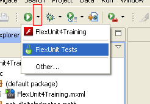

Unit 1 - Introducing FlexUnit 4.2.0
 Download Unit Project Files
Download Unit Project FilesFlexUnit 4.2 is an extensible testing framework for ActionScript 3.0 classes and provides extensions for working with the Flex 2, 3, and 4 Framework, and Adobe AIR projects. The FlexUnit framework is used to automate unit and integration testing.
Objectives:
After completing this lesson, you should be able to:
- Explain why we test automatically
- Understand FlexUnit .9
- Understand Fluint 1.x
- Understand FlexUnit version 4.x
Topics
In this unit, you will learn about the following topics:
- Understanding why we test automatically
- Understanding FlexUnit .9
- Understanding Fluint 1.x
- Understanding FlexUnit 4.x
- Understanding the integration between Flash Builder and FlexUnit
- Getting Help
Understanding why we test automatically
Automated testing is designed to solve several problems:
- We are all fallible.
- We all get tired, bored and stressed.
- Projects have limited time available and we must often make hard decisions.
- We can spend our time developing new code or debugging old code but the majority of us prefer the former.
- Software errors cost a lot of money and time.
The background on software and errors
A 2002 NIST study found that software errors cost the US economy .6% of the US GDP yearly. That sets the net loss today at about 79.8 billion dollars a year.
Half of that cost is absorbed by people who buy software. The other half is absorbed by people who create software. The same study noted that 80% of development costs are spent on identifying and correcting defects. In other words, less than 20% of development cost goes to planning, initial coding and related activities. The cost of errors is proportionate to when they are found. Any requirements error found after release can cost 10 to 100 times as much to fix as during the requirements gathering phase. An architecture error found after release can cost 25 to 100 times as much to fix this late in the process.
Testing versus Automated Testing
Many people believe in testing, however, automating these tests is often looked at as extra work. Here are a few additional things to consider:
- There are a limited number of hours in a day.
- Code that hasn't been tested lately is susceptible to failure.
- As people become tired, they test less effectively.
- People are affected by emotion.
- By reducing the defects in their code, developers will have additional time in the project to allow for testing.
- The earlier we catch a mistake the cheaper it is to fix. To catch errors early, we need to test constantly.
Figure 1: Influence Diagram from Test-Driven Development by Kent Beck. Addison-Wesley Professional (November 18, 2002)
This influence diagram does a wonderful job of illustrating the point. As stress on a project increases, the amount of time dedicated to running tests decreases. As the amount of time to run tests decreases, the stress increases.
Figure 2: Influence Diagram from Test-Driven Development by Kent Beck. Addison-Wesley Professional (November 18, 2002)
As pressure increases, manual testing decreases. As manual testing decreases, errors increase. As errors increase, pressure increases. It's a death-spiral.
Breaking the Spiral
To break this spiral, drastic change is needed. We need to have a way to test which is not affected by:
- Pressure
- Exhaustion
- Emotion
- Boredom
If we rely upon manual testing of code, then our time allocated to testing must necessarily increase as the project grows if every item is going to be retested. This is the inverse of most projects where time grows shorter as the project continues.
Setting up automated testing does require some time from developers. However, a test, once created, can be executed by a machine automatically, virtually and constantly. Once implemented, automated testing does not take additional time away from the development team.
Computers are good at automated tasks. Developers are good at automating time consuming tasks. Testing is a time consuming task which developers should automate.
Creating Better Code
Apart from finding errors more quickly, automated testing has the added benefit of allowing us to sleep better at night. Since code is tested more, there can be less fear of change. We do not need to remember every detail of how or why a piece of code works, because we can rely upon the tests to both test and act as a portion of the documentation for that code.
This means developers can refactor and change code without fear of breaking some other unknown item. This ability to embrace refactoring allows us to change items that need to be changed and solve problems directly and correctly.
Understanding FlexUnit .9
The first unit testing framework created specifically for RIA development was AS2Unit in 2003, developed for the RIA community by Alistair McLeod (then at a company named iteration::two, now at Adobe Consulting). When Flex 1.0 was released the same team released FlexUnit, borne out of AS2Unit and with a graphical test runner for the Flex development environment.
The release of Flex 2, which introduced ActionScript 3, meant that another migration was required, and a team from Adobe Product Engineering and the Adobe Developer Relations team performed this and released another version, FlexUnit .9, on Adobe Labs. To allow community contributors, the project was thereafter moved to Google Code under the name as3flexunit.
In August 2008, FlexUnit .9 moved back to Adobe, and now resides on Adobe Open Source.
FlexUnit .9 was based on a JUnit 3.x model of unit testing. A user could build a series of new tests by extending a core FlexUnit class. These classes could evaluate aspects of a class and report back their results to a graphical runner that showed successes or failures.
Understanding Fluint 1.x
In 2005, the popularity of the Flex framework continued to grow, pushed forward by the adoption of this technology by enterprise customers. Many of these customers began to produce their own Flex framework component and extensions which were in dire need of testing.
Internally, Flex components are almost entirely asynchronous and are not architected in such a way to provide distinct and testable units. While FlexUnit .9 was able to provide a solid base for testing ActionScript classes, it was difficult to test event-based synchronous and asynchronous operations using this framework. The result of these two issues was a large number of untested and untestable Flex components growing inside of client organizations worldwide.
In 2006, Digital Primates, a Chicago-based Flex consultancy, decided to solve this issue by extending FlexUnit .9 and providing enhanced support for asynchronous operations. Unfortunately, FlexUnit .9 was not open for extension and, at that time, Adobe was not accepting community contributions to the project. After several attempts to modify the existing code, a decision was made to simply create a new testing framework for Flex specifically designed to simplify the integration level operations needed to test UIComponents. The result of this effort was an internal tool named dpUInt (Digital Primates Unit and Integration).
dpUInt could provide standard unit testing functionality, but it also provided concepts such as sequences and enhanced asynchronous support, allowing a user to wait for multiple asynchronous events and create tests along the lines of:
- Build a button
- Add it to the display list
- Wait for it to finish creating
- Click that button
- Wait for it to emit the correct event
In 2007, Digital Primates decided to open this tool to the world at large under an MIT open source license. The community eagerly engaged with the new tool and began making suggestions and contributions. In September of 2008, the unit testing framework was renamed to Fluint (Flex Unit and Integration) and released as a 1.0 version under the MIT license.
The project continued to evolve and develop with contributions from both Digital Primates and the community and continues to experience active use today.
Understanding FlexUnit 4.x
Towards the end of 2008, Adobe decided that integrating unit testing into their Flash Builder Integrated Development Environment (IDE) was a goal for the next major release. At the time, they had planned to use FlexUnit .9.
Through a series of discussions, the teams at Digital Primates and Adobe Consulting began planning a new version of FlexUnit which would combine the strengths of the previous version with advances in both the Java and Flex testing communities.
This new version, named FlexUnit 4, started with the core requirements provided by JUnit 4.5 but was rewritten to support the core needs of the Flash Player. Additionally, the extended functionality of Fluint and other tools was added to create a testing platform. Unlike the original FlexUnit, extensibility was a key goal as well as integration with other systems and platforms.
FlexUnit 4 was released to alpha in May of 2009 and has continued to update since that time.
Unlike either of its ancestors, FlexUnit 4.x is based on the concept of metadata (similar to Java annotations) to define tests. This provides a much simpler way to define and build tests.
FlexUnit 4.x further has the ability to execute FlexUnit .9 and Fluint 1.x style unit tests, making upgrade and compatibility easy.
Understanding the integration between Flash Builder and FlexUnit
Adobe Flash Builder 4 Premium ships with FlexUnit 4.0 included. The integration between Flash Builder and FlexUnit consists of several wizards to create test suites and test cases along with a FlexUnit result panel which displays the results of the test run.
While Flash Builder's wizards can create either FlexUnit .9 or FlexUnit 4 style tests, the FlexUnit 4 framework is used to execute these tests in all cases.
The FlexUnit framework is an open source project under the MIT license and maintained by the Flex and ActionScript communities. The Flash Builder plugin and related code is maintained exclusively by Adobe.
The release schedule for these two products is not synchronized and their version numbers are not synchronized. FlexUnit 4.1 is expected to be released in September of 2010 and will work with any version of Flash Builder.
Demo: Running a Unit Test Case
In this walkthrough you will perform the following tasks:
- Import the FlexUnit4Training.fxp file into Flash Builder.
- Run a unit test case.
Steps
-
Start Flash Builder:
In Windows: start by choosing Start > Programs > Adobe > Adobe Flash Builder.
In Mac: from Finder, browse to your Applications > Adobe Flash Builder 4 directory. Run from Adobe Flash Builder 4.
This is most likely the way you will start Flash Builder. You may already have Eclipse installed on your computer and previously added the Flex functionality using the plug-in configuration. In that case, you need to open Eclipse as you have before, and switch to the Flash perspective.
-
From the main menu of Flash Builder, choose File > Import > Flash Builder Project. Flash Builder has the ability to import pre-existing projects packaged in the FXP format as a stand-alone file.
In the Import Flash Builder Project dialog box that opens, click the first Browse button on the right of the screen. Navigate to the FlexUnit 4 Training/FXPs/Unit 1/Start directory on the provided media, and select the FlexUnit4Training.fxp file.
-
The screen will change to show new Import method options with either "Import new copy of project" or "Overwrite existing project." Choose "Import new copy of project" and extract the project to your Flash Builder workspace, making sure to replace "LocationContainingFXPFile" and "YourFlexWorkplace" with the location of the FXP file on your machine and your preferred directory for Flex projects.
Figure 1: Importing a new Flex project
In future sections, you will select "Overwrite existing project" instead.
Once the project has been imported, it should appear in the Package Explorer on the left.
-
In the Package Explorer, expand the src folder's default package double-click the SampleCircleLayout.mxml file to open it.
-
Click on the run button's dropdown arrow to reveal the run menu, choose the SampleCircleLayout option.
Figure 2: Running SampleCircleLayout.mxml
If the SampleCircleLayout.mxml ran successfully, you should see the following in your browser window:
Figure 3: SampleCircleLayout in the browser
-
In the Package Explorer, expand the src folder's default package and double-click the FlexUnit4Training.mxml file to open it. The contents of this file will be explored in more details in a future unit.
-
Click on the run button's dropdown arrow to reveal the run menu. Choose the FlexUnit Tests option.
Figure 4: Running FlexUnit Tests in Flash Builder
-
In the FlexUnit Results tab in Flash Builder, click on the plus sign at the start of the math.testcases.BasicCircleTest line, this will expand the test file and show each individual test that passed.
If the FlexUnit tests ran successfully, you should see the following output in your FlexUnit Results tab:
Figure 5: Five FlexUnit Tests passed
Run the application
Run the tests
Getting Help
Apache Flex Website
Flex.Apache.org is the site for FlexUnit 4.x. The site includes the Apache Flex, FlexUnit, and other related projects news and updates, API Docs, Documentation, Blog, and Downloads.
The Download page includes links for the FlexUnit project code on GitHub.
Mailing List
This is where community users can get together and discuss Flex and FlexUnit, how they use it. It is also used for helping each other with using the testing suite. All discussions on this list are unofficial discussions. Use this list to get help from fellow Flex and FlexUnit developers.
- Subscribe: users-subscribe@flex.apache.org
- Post (after subscription): users@flex.apache.org
- Unsubscribe: users-unsubscribe@flex.apache.org
- Subscribe to digest: users-digest-subscribe@flex.apache.org
- Unsubscribe to digest: users-digest-unsubscribe@flex.apache.org
Users Forum
The Flex users forum is a mirror of the Flex users mailing list and contains topics including FlexUnit. All posts to the forum are mailed to the mailing list, and all messages sent to the mailing list are posted on the forum.
Tender
The Tenderapp aggregates questions and concerns we have seen over years of supporting and developing FlexUnit 4.x. This is a great place for historical information and information on previous releases. New questions should be posted on the Flex Users Mailing list.
Summary
- Testing automatically helps solve many commonly encountered problems in software development, such as human fallibility, project time constraints, and stress.
- FlexUnit 4.x is an open source unit testing framework for Flex and ActionScript 3.0. It is integrated into the Flash Builder 4 IDE and was built on the strengths of its predecessors, FlexUnit .9 and Fluint.
- For help and additional information on FlexUnit 4.x: